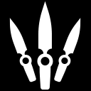

キャラ紹介
役割（ロール）ごとの主な初期キャラ
主に、四つの役割（ロール）に分けられ、デュエリスト・センチネル・イニシエーター・コントローラーがある。
ジェット
役割：デュエリスト
韓国出身のジェットは、俊敏で捉え難い戦闘スタイルを持ち、他の誰にも真似できないような危険な行動を取ることができる。交戦地帯の周囲を走り回り、何が起こったのかを敵が理解するよりも早く、切り刻んでしまうのだ。
セージ
役割：センチネル
中国出身の守り手であるセージは、どこにいる時も仲間のために安全地帯を作り出すことができる。激しい攻撃を防ぎ、力尽きた戦友たちを蘇生する彼女は、過酷な戦場に一時の安らぎをもたらす存在なのだ。
ソーヴァ
役割：イニシエーター
とこしえの冬、ロシアの凍原で生まれたソーヴァは、冷徹かつ確実に敵を追跡、発見し、そして排除する。たとえ逃げようとしても、彼の特別製の弓と恐るべき偵察アビリティーから身を隠すことはできない。
ブリムストーン
役割：コントローラー
アメリカ合衆国から参戦したブリムストーンの衛星軌道兵器があれば、部隊は常に優位に立つことができる。離れた場所から確実に支援を送るアビリティーを持つ彼は、現地での指揮にうってつけの存在なのだ。
スキル紹介
アップドラフト
ジェットを上に向かって飛ばす。オブジェクトに乗ったりすることもできる。
テイルウィンド
風を身にまとう。再使用すると、現在の進行方向に向かって加速させる。
クラウドバースト
煙を発生させ、しばらくの間視線を遮る。
ブレードストーム
精度の高い投げナイフを構え、「発射」で1本ずつ投げる。ナイフは相手をキルすると補充される。
Q - スロウオーブ
オーブを発射し地面に触れると破裂して遅延フィールドを作り出す。
E - ヒーリングオーブ
ダメージを受けた味方のHPを回復させたり、自分を回復することができる。
C - バリアオーブ
分厚い壁(バリア)を生成する。
X - リザレクション
蘇生能力を使えるようにする。デスした味方に狙いをつけてから「発射」で蘇生を開始する。
ショックボルト
発射すると爆発して周囲のプレイヤーにダメージを与える。
リコンボルト
矢の場所から視線が通る周囲のすべての敵の位置を特定する。
オウルドローン
ドローンからダーツを発射し敵の位置を特定する。
ハンターズフューリー
ソーヴァの前方に一直線にエナジーブラストを放ち、巻き込んだ敵にダメージを与える
インセンディアリー
焼夷グレネードランチャーを発射し地面を炎上させて敵にダメージを与える。
スカイスモーク
タクティカルマップを開き着弾地点を設定すると指定した地点の視線を遮る。
スティムビーコン
展開し、範囲内プレイヤーの攻撃速度を上昇させる。
オービタルストライク
発射で指定した地点に衛星軌道上からレーザー攻撃を行い大ダメージを与える。